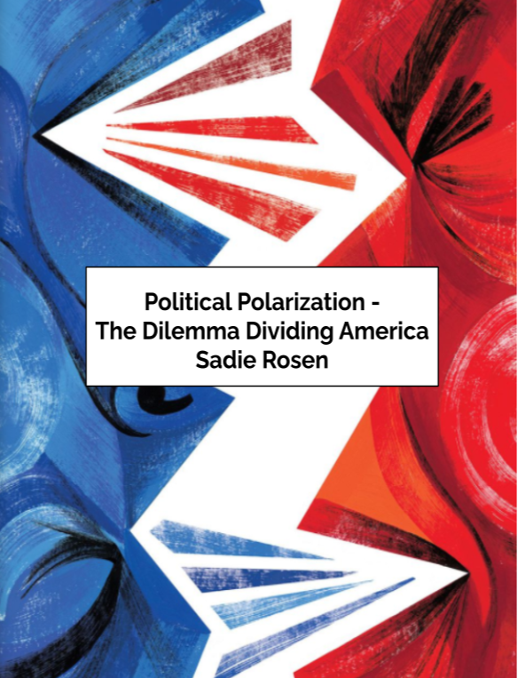

Sadie's Projects

- I completed the I-Search freshman year at the beginning of the COVID-19 pandemic. Though this was just an assignment in english class to get a grade, I learned so much while researching for this project. I interviewed a state sentator, I went to voting polls, I emersed myself in politics to understand political polarization within the United States. This project entailed writing 3 essays, each about a different segment of political polarization. I learned so many new perspectives that I never would have had without opening my eyes to the polarization that takes place in our country.

- Recently, I have been very into art. I feel that calms me in times of stress. I like to draw in order to decompress. Peaceful scenes such as the one shown help me relax when I study for school or external factors stress me out.